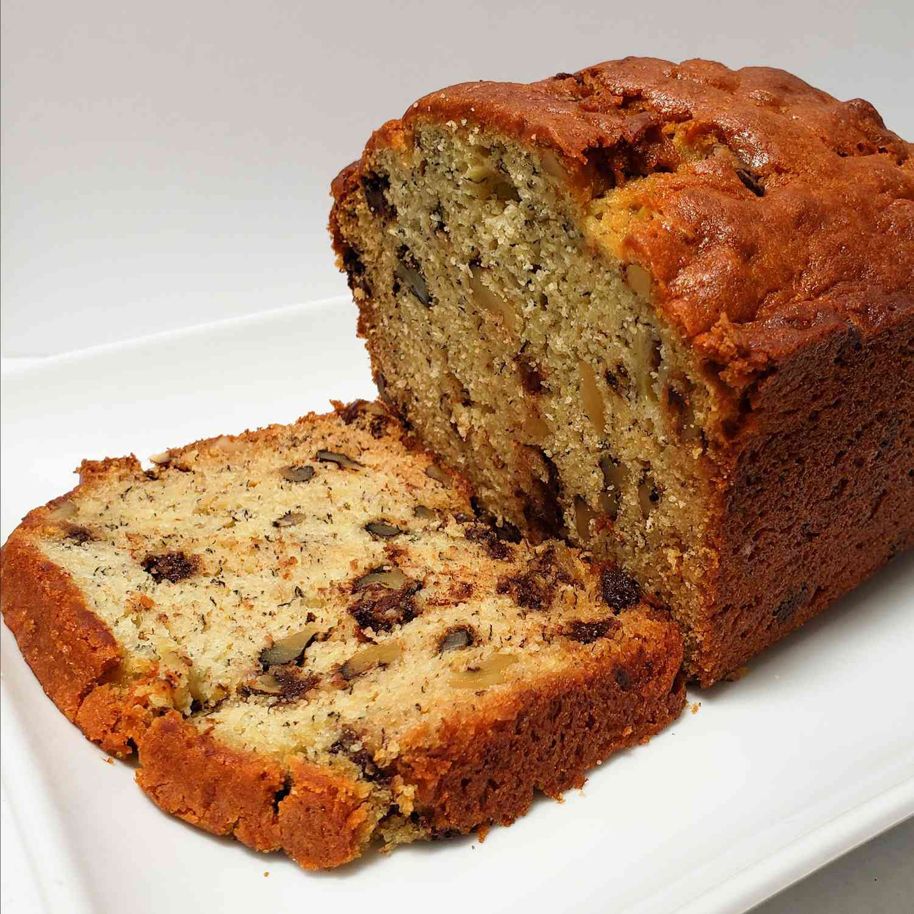

Chef John's Banana Bread

Recipe via John Mitzewich - Allrecipes
Description
This
banana bread recipe
comes from Chef John Mitzewich, and his blog
Food Wishes. I first
discovered Chef John around seven years ago and was instantly hooked due
to his presentation style and signature catch phrases. If your a fan of
banana bread, I would encourage you to give this recipe a try soon.
Ingredients
- cooking spray
- 2 cups all-purpose flour
- 1 tsp baking powder
- 1 tsp baking soda
- 1 tsp salt
- 1 cup white sugar
- 1/2 cup butter, softened
- 3 ripe bananas, mashed
- 2 large eggs
- 1 tbsp milk
- 1/4 tsp vanilla extract
- 1 cup chopped walnuts
- 1/3 cup semisweet chocolate chips
Steps
-
Heat an oven to 325 deg F (165 def C). Coat a 9x4-inch load pan with
cooking spray.
-
Whisk together the flour, baking powder, baking soda, and salt in a
medium bowl and set aside.
-
In a large bowl, beat together the sugar and butter until smooth. Add
mashed bananas and mix until combined. One at a time, add eggs and beat
well. Stir in the milk and vanilla.
-
Stir in the flour mixture, walnuts, and chocolate chips until just
incorporated. Pour the batter into the prepared loaf pan. Tap pan on the
counter to release any pockets of air.
-
Bake in the oven until a toothpick inserted into the corner comes out
clean (about 1 hour and 10 minutes). Leave the bread to rest in the pan
for 15 to 20 minutes. Remove from the pan, slice and serve.